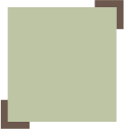

Aanbod
Waar werken wij
naartoe?
Wij werken naar een gezond en sociaal atmosfeer toe waarin je met elkaar gemakkelijk te werk kan gaan! Of je een beginner bent, of een gedegen expert; iedereen is welkom! Wij proberen op alle vlakken de teelt en cultivatie werk in de moestuin een hobby te maken, zodat het nooit meer als werk zal aanvoelen!
Wij bieden wederom:
- Leuke moestuinactiviteiten activiteiten
- Gratis teelbaar groente en fruit
- Workshops in verdiepend tuinieren
- Een hechte netwerk
- Heel veel plezier!
"Tuinieren was nooit zo leuk geweest!" - J. Singh
Als een grote binnenmens, was J. Singh nooit een grote fan geweest van tuinieren. In zijn eigen woorden: “Het leek mij veel te complex en ingewikkeld. Ik had het altijd wel gewild, maar er geen steuntje in de rug om mij op pad te zetten.”
Net zoals Jasprem, zijn er andere mensen die het leuke aan tuinieren zien, maar niet genoeg motivatie hebben gekregen om überhaupt te willen beginnen. Wij raden iedereen aan om een bezoekje te nemen bij ons; je zal er van genieten!